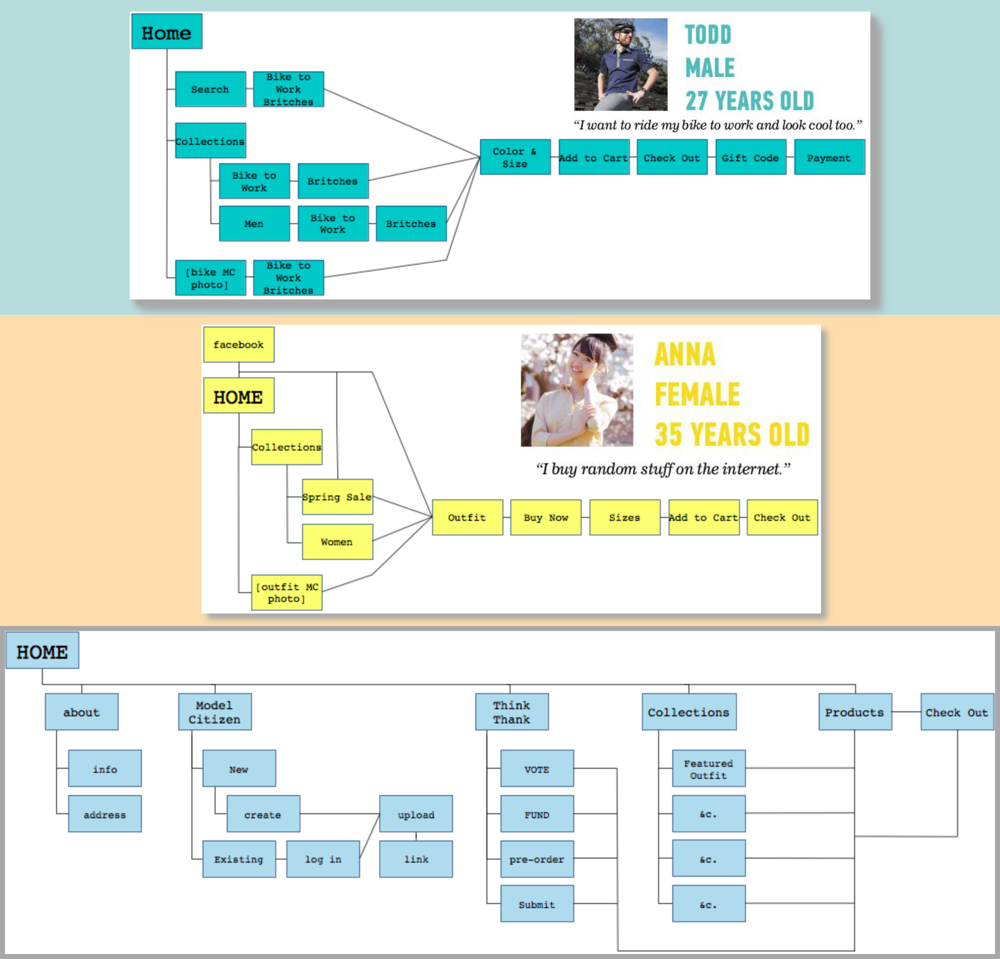

betabrand Process

Beginning with the feedback I had gotten from testers, I sketched a simple flow for two of the users defined in the brief. I was then able to extrapolate it into a full site map that was both easily browsable and scalable.
Based on card sorting exercises, it quickly became apparently that there are several different styles of online shopping that needed to be integrated. Allowing for everything everywhere leads to the overwhelming UI on the current betabrand site, so I pieced together different aspects of the experiences and tested them together to find something that worked for the greatest number of people.
Market research for betabrand revealed very clear trends across boutique clothing shop sites that lend a similar feeling of exclusivity. However, betabrand was looking for a design that would highlight their quirkyness and individuality.